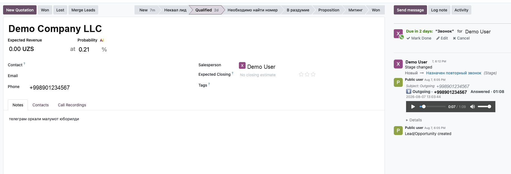

Phase 2 - CRM
Incoming calls are matched to a CRM lead by phone number and logged in the chatter - with the recording, right where your sales team works.
A call logged on the opportunity - direction, number, status and duration, with the recording playable right in the chatter.

The caller number is normalized to E.164 and matched against existing leads and opportunities - no more misfiled calls.
If no lead matches, a new opportunity is created automatically, so every call ends up in the pipeline.
A single message logs direction, duration, status and operator, plus an inline audio player and a details block.
When the recording finishes transcoding on the server, it is attached to the same chatter message automatically.
Map a XCall backend user to an Odoo user so the call is credited to the right salesperson.
A one-time action reformats badly stored phone/mobile numbers so matching stays reliable.
Depends on XCall Connector and the standard CRM app. A XCall account and server are required.
XCall - Odoo 19 - LGPL-3